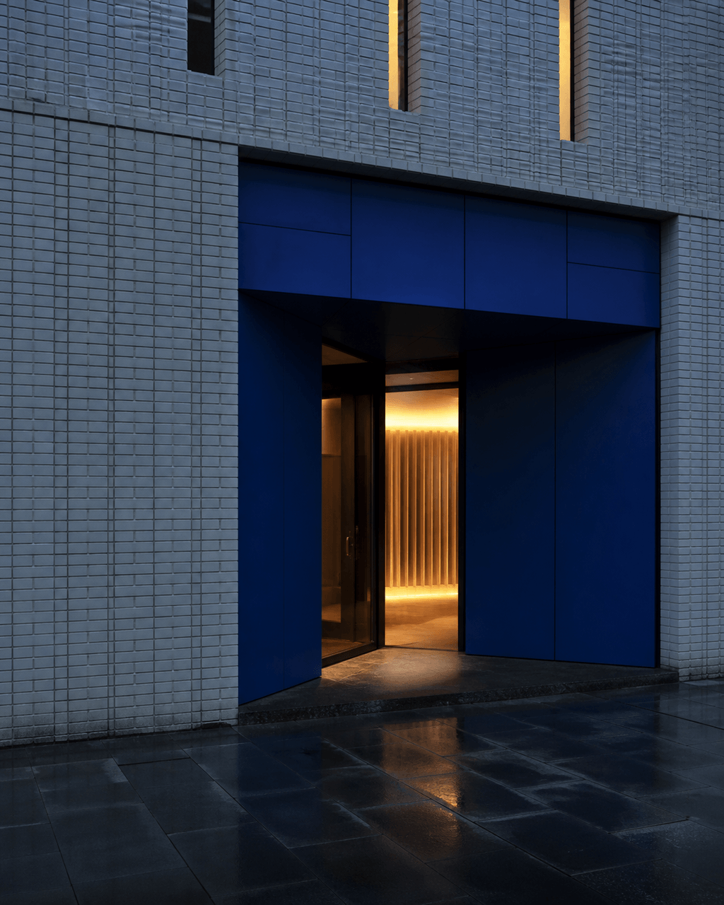

ERDVĖ
Aiškios zonos padeda pasirinkti tempą.
LT—11 / FIZINĖ VIETA
Patikrinkite faktus ir nusistatykite ribas.
PLANUOTI APSILANKYMĄ →
Aiškios zonos padeda pasirinkti tempą.
Laikas ir biudžetas nustatomi iš anksto.
Klausimas darbuotojui nėra įsipareigojimas žaisti.
Ši svetainė pristato nepriklausomą fizinės pramogų vietos koncepciją suaugusiesiems. Ji nesuteikia galimybės registruoti paskyros, pervesti pinigų, atlikti statymų ar žaisti internetu. Uniclub pavadinimas naudojamas kaip projekto raktažodis, o ne kaip patvirtinimas, kad puslapį valdo konkretus operatorius. Adresas, licencijos numeris, darbo laikas, žaidimų sąrašas, kainos ir paslaugos turi būti įrašyti tik gavus patikimus dokumentus.
Lankytojo kelias prasideda dar prieš duris: aiškiai nurodoma amžiaus riba, būtinas tapatybės dokumentas, vidaus taisykles ir atsakingo losimo informacija. Priėmimo zonoje darbuotojas paaiškina erdvių paskirtį, tačiau neskatina didinti išlaidų ar tęsti žaidimo. Interjere numatytos matomos judėjimo kryptys, pakankamas apšvietimas ir atskira poilsio zona, kurioje galima ramiai įvertinti sprendimą tęsti ar baigti vakarą.
Prieš apsilankymą verta nustatyti konkrečią pinigų sumą ir laiką. Šių ribų nereikėtų keisti reaguojant į rezultatą. Negalima skolintis, naudoti kasdienėms reikmėms skirtų lėšų ar bandyti susigrąžinti praradimus. Jei lošimas kelia įtampą, slaptumą, konfliktus arba tampa sunkiai sustabdomas, tinkamas žingsnis yra pauzė ir kreipimasis į oficialias pagalbos institucijas. Savęs apribojimo galimybės ir kontaktai prieš publikavimą tikrinami Lietuvos priežiūros institucijų šaltiniuose.
Redakcinis principas paprastas: atskirti patvirtintą faktą nuo dizaino sumanymo. Kiekvienam kintamam teiginiui priskiriamas šaltinis, tikrinimo data ir atsakingas asmuo. Nepatvirtinti tekstai pažymimi kaip pavyzdziai arba visai neskelbiami. Privatumo, vaizdo stebėjimo, slapukų ir užklausų formų aprašai turi atitikti realų techninį procesą. Iki galutinės teisinės ir redakcinės peržiūros svetainė paieškos sistemoms paliekama uždaryta. Informacijos architektūra sukurta taip, kad lankytojas greitai atskirtu vietos aprašymą, elgesio taisykles ir pagalbos kryptis. Svarbūs perspėjimai nekeliami į puslapio apačią ir nėra slepiami dekoratyviuose elementuose. Turinys rašomas paprasta lietuvių kalba, vengiant spaudimą kuriančių formuluočių, nepagrįstų išskirtinumo teiginių ir pažadų apie rezultatą. Kiekviena forma šiame prototipe yra demonstracinė: ji nesiunčia duomenų, kol nėra patvirtintas duomenų valdytojas, saugojimo terminas, gavėjai ir saugumo priemones. Aiški paskelbimo data padeda lankytojui įvertinti informacijos aktualumą.
Šio puslapio tema — pries atvykstant. Galutinėje versijoje čia pateikiama tik konkrečiai temai aktuali, datuota ir šaltiniais pagrįsta informacija. Jei faktas pasikeičia, turinys atnaujinamas arba laikinai pašalinamas.
PATVIRTINAMI DUOMENYS
Šie laukai pildomi tik patikrinta operatoriaus informacija.
PATVIRTINAMI DUOMENYS
Šie laukai pildomi tik patikrinta operatoriaus informacija.